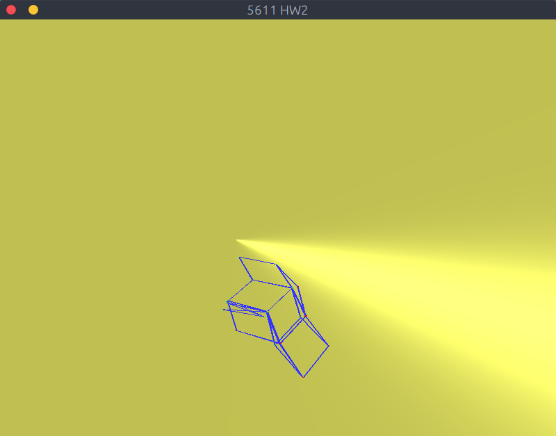
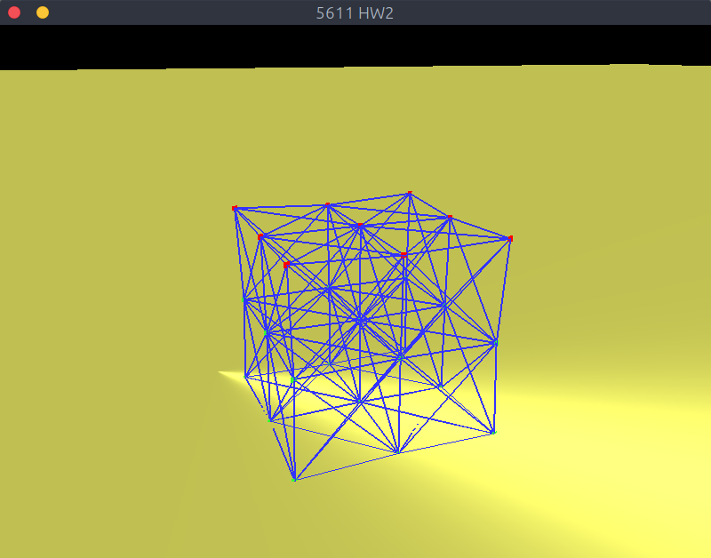

Cloth Simulation
Description
The aim of this project was to simulate cloth and other related phenomena using mass-spring systems and Hooke's Law.
Features
- Realtime, 3D rendering
- 3D user controlled camera
- Realtime user interaction with system
- 3D Mass-spring cloth simulation
- Textured simulated objects
- Drag terms
- 15x15 and 20x20 cloth at 30+ FPS
- Flexible implementation allowing the creation of many cloths and/or deformable objects
- Eulerian integration
Simulations
- Regular cloth (flag)
- Deformable objects
- Polyphonic synthesizer (partially implemented)
Challenges
The largest challenges of this project have been determining if the simulation is "correct" or not. With the first part of the simulation, I made the mistake of not taking into account forces from all directions on nodes, which resulted in the springs not responding to forces in physically realistic ways. An additional challenge was working on the physically-based sound simulation. Due to the way that the rest of my simulation was implemented, the update speed on the nodes was not fast enough to use their velocity for realtime audio.
Another challenge that I encountered during the course of this project was texturing the flags correctly. The first hurdle to get over was correctly assigning the texture coordinates based on each vertex (Node) position. I was fairly certain that I had a working model for how the textures would work, but the texture was still completely garbled. It turns out that when using a square mesh, the texture should also be square. I started out using the New Zealand flag with its original aspect ratio, but then squashed it down to a square image to make the texture work properly.
-
Original New Zealand flag texture -
Square New Zealand flag texture
Controls
- WASD/Mouse: Camera control
- Arrow keys: Move anchored nodes (top nodes) around
- Space: Toggle draw mode for cloth
- p: Pause simulation
- e: Toggle slow-motion mode (defaults to on)
- z/x: Decrease/Increase spring constant
- c/v: Decrease/Increase damping constant
- b/n: Decrease/Increase density of air ρ
- m/,: Decrease/Increase drag coefficient
Special controls for deformable objects
- t: Release anchors from object
Special controls for audio simulation
- i: Pluck string
- h: Dampen all forces acting on the string
- q: Pause SDL audio
Implementation Details
Simulation Overview
The first step when the simulation is run is to build the cloth
programmatically. A start position is given to the Cloth constructor, and
it creates Node objects in a gridded pattern to store positions and
velocities, and builds an accompanying adjacency list. The link and cloth
renderers use this adjacency list to determine where to draw
GL_LINES and GL_TRIANGLES, respectively. This
adjacency list is also used when calculating the forces acting upon each
node.
Each time through the main event loop, the cloth is updated 10 times with a fixed `dt = 0.001`. This was to prevent the simulation from blowing up, and to still display realistic results. Inside the cloth update, the following steps occur:
- All forces become `F = m_{\text{node}}*a_{\text{gravity}}`
- Spring forces (`k_{\text{spring}}` and `k_{\text{damp}}`) are added
- Drag forces from the cloth area are applied
- Integration (Eulerian) is performed (velocities and positions are updated)
- Each node is updated
- The cloth and link renderers are updated
After all updates are finished, the cloth is drawn and the scene rendered.
Deformable Object Simulation
The deformable objects that were created in this simulation are very similar to the mass-spring cloth system described above. They follow the same general principles, only extended into a third dimension. Instead of only rows and columns for a cloth, there are now rows, columns, and slices for a deformable object. Initially the deformable objects were created with no cross springs, which resulted in the object becoming a pancake as soon as it hit the ground. After discovering this, cross springs were added along all of the pricipal axes of the object, resulting in a much stronger object.
The deforable object spawns in the air, anchored from the nodes in its top
slice. Once the t key is pressed, the object is released from
its anchors and falls freely until it hits the ground, and/or is acted upon
by the wind. Node collisions with the ground are done naively, assuming that
it is a plane located at 0.0 on the y axis.
Simulated Musical Instrument
I attempted to create a simulated musical instrument using the same concepts as the main cloth simulation, with the added component of realtime audio. I was never able to get a fully working audio simulation. I am fairly convinced that the cause is that the update method of the string takes too long to update each Node's velocity, resulting in audio that doesn't actually reflect the vibrations of the string in realtime. When I have more time, I'd definitely like to come back to this simulation and try again to make it work properly.
-

Deformable cube with no cross springs (crushed by its own weight) -

Deformable cube with cross springs, supporting itself
Force Calculations
Spring Forces: The spring forces within the cloth are calculated using a dampened version of Hooke's Law: `F_\text{spring} = k_{\text{spring}}*((x_1 - x_0) - x_{\text{rest}}) + k_{\text{damp}}*(v_1 - v_0)`. The forces are applied in opposite directions at each end of the spring.
Drag Force: The drag force is calculated using a modified version of Rayleigh's drag equation: `F_\text{aero} = -\frac{1}{2} \rho |\mathbf{v}|^2 c_\text{drag} a \mathbf{n}`. The normal of each quad is calculated using the cross product of two of its edges.
Code
Code from this project can be found in this GitHub repo. The
main cloth simulation and deformable object code is on the branch
master, and the sound simulation is on the branch
audio.
The code is written in C++ and makes use of the following external libraries:
- OpenGL 3.3 API: Graphics
- SDL2: Window management
- GLM: Matrix/Vector mathematics
- stb_image: Loading image textures
Videos
-
Flag Demo -
Four 20x20 cloths -
Deformable Body Simulation -
Simulated String Instrument -
Check-in